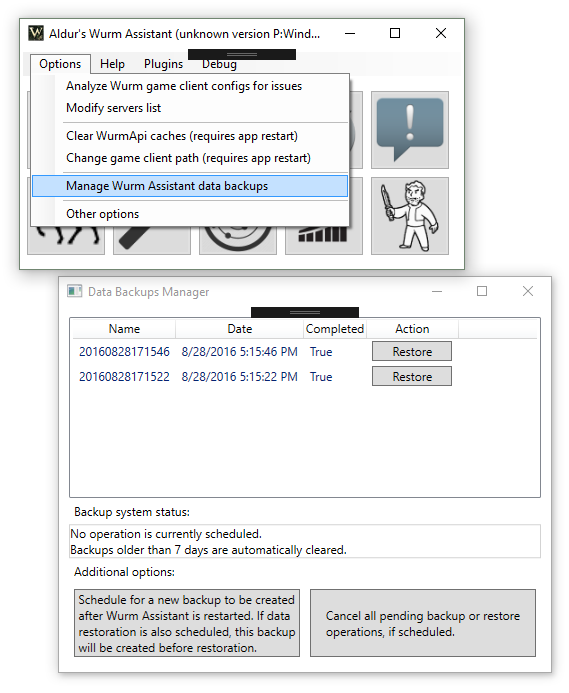

As rare as they might be, sometimes a system crash can corrupt data for Wurm Assistant. Until now, it meant losing a lot of setup and being moderately angry for a while.
A new backup/restore feature will now help you restore most of your stuff after such an unfortunate incident. You can find it under Options menu -> Manage Wurm Assistant data backups.
Wurm Assistant will by default make one backup per day and keep them for up to 7 days. You can also schedule an additional backup at any time.
-- Aldur